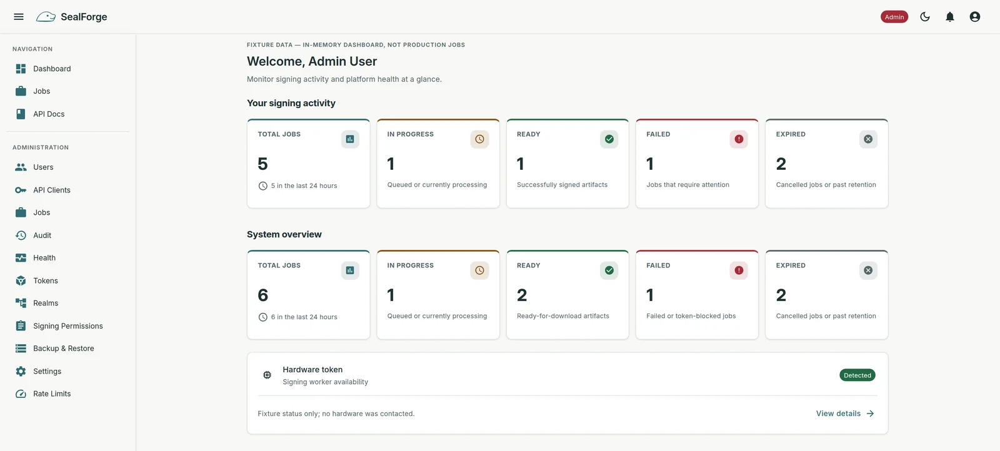
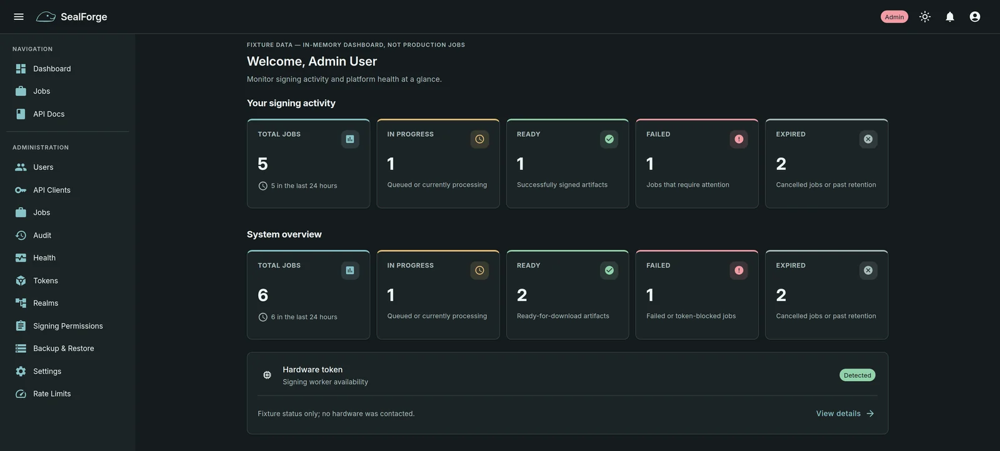

Keep the keys yours.
Sign through your own token. Keep the signing operation on infrastructure you control.
Your team's signing desk
A friendly, self-hosted home for code signing. Keep your keys under your control, choose who can sign, and follow every release from upload to download.
Your infrastructure. Your keys. A little less release-day friction.


Sign through your own token. Keep the signing operation on infrastructure you control.
Decide which people and build pipelines may use each signing certificate.
Follow each job, see its history, and collect the result after verification succeeds.
A familiar flow
Upload a file, or let your pipeline send it for you.
Access is checked before the file is signed, timestamped and verified.
Download the verified file, with the job history close at hand.
There is room at the workbench.
Connect your pipeline, explore the workflow, or help shape what comes next.